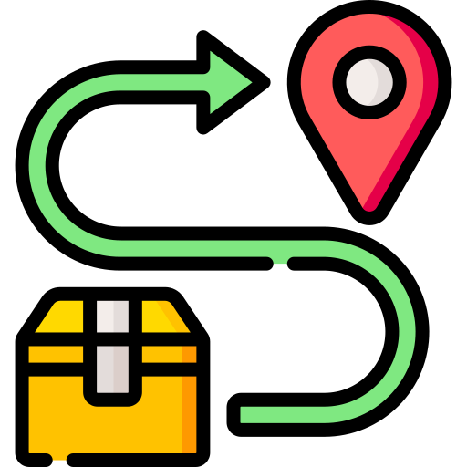
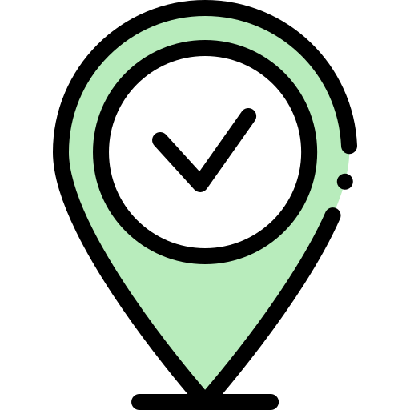
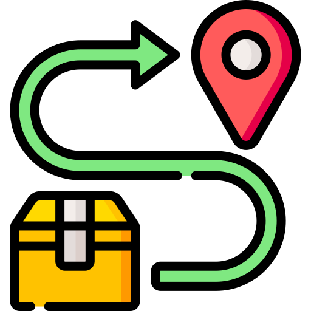
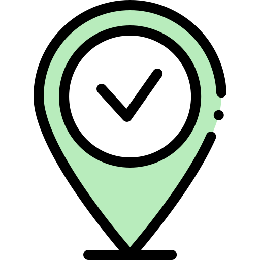

Tracker Proposal
With the idea of later on implementation, the team would like to incorporate an algorithm, alongside with their gaming application, to provide the users an efficient way of tracking down the schedule of garbage collection. Based on the type of user, a specific menu will be created. For the collectors’ end, a screen will be displayed showing the shortest navigation of their route and which area they need to go. Then for the households’ end, a screen will be displayed showing the garbage collection schedule and alike that will help them track the system. WIth this, the team believes that this can definitely enhance the management and collection of solid and hazardous wastes during several lockdown protocols.

 


